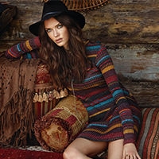
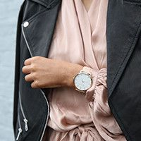

If you're lucky or connected you can get an invite, sans the price tag. But I wasn't so lucky or connected my first 2 years so I'm here to help you out. First, plan out which shows are most important to you and make a schedule and this is a biggie: SET A BUDGET. If you're worrying about blowing your cash the whole time you won't have fun. Then check out prices, days, and times and prioritize the designers you wIf you're lucky or connected you can get an invite, sans the price tag. But I wasn't so lucky or connected my first 2 years so I'm here to help you out. First, plan out which shows are most important to you and make a schedule and this is a biggie: SET A BUDGET. If you're worrying about blowing your cash the whole time you won't have fun. Then check out prices, days, and times and prioritize the designers you If you're lucky or connected you can get an invite, sans the price tag. But I wasn't so lucky or connected my first 2 years so I'm here to help you out. First, plan out which shows are most important to you and make a schedule and this is a biggie: SET A BUDGET. If you're worrying about blowing your cash the whole time you won't have fun. Then check out prices, days, and times and prioritize the designers you want to see most. Lastly, purchase your tickets and get excited!
Always be true to your own sense of style, if you don't you'll be uncomfortable the whole time and it will show. Remember, NYFW is about expressing yourself and taking in what the designers have chosen to express through their new lines. Also it's important to wear shoes you'll be comfortable in all day. Obviously you want to look good, but you'll be on your feet all day long, so be prepared.
Related Contentemail: isa@fashionblog.com | phone: 917-555-1098 | address: 371 284th St, New York, NY, 10001